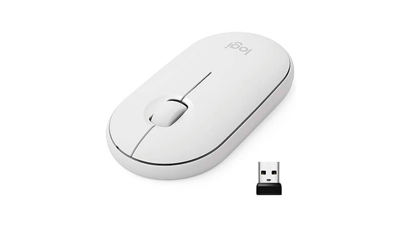
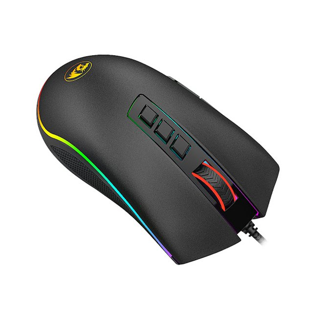
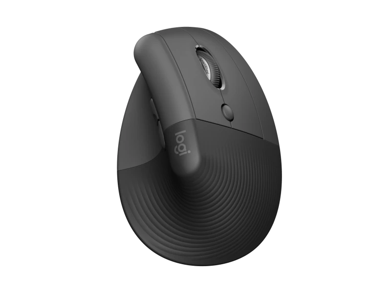

1- Mouse Comum
Este Mouse pode ser usado normalmente em quaisquer computadores e notebooks, podendo até mesmo em televisões. Sua validade dura em cerca de 2 a 4 anos dependendo da marca escolhida. Por ser comum, o mouse normal é o mais personalizado e o que mais vendeu após as personalizações para públicos das marcas.

2- Mouse Bluetooth
Sendo utilizado via sem fio, e usando um receptor do mouse, é possível usá-lo em computadores e notebooks, também aceitando televisões. Durando de 3 a 6 meses variando o modelo. Este tem um de seus modelos mais vendidos do mundo; Mouse Sem Fio M170 Preto Logitech.
3- Mouse Gamer
O mais conhecido no mercado pelos Gamers e pessoas que acompanham conteúdos Geeks. Este dura por volta de 9 meses se ajustado no modo típico. Tendo como o seu melhor modelo mais vendido, Razer DeathAdder V2.
4- Mouse Ergoconômico
Este Mouse é para pessoas com problemas para se acostumar a um Mouse normal, como as vezes o tamanho, e a largura não se conformarem com a sua mão. Ele é moldado para o encaixe de sua mão, e se usando via Bluetooth. Sua duração se torna entre 12 a 36 meses assim como demais Mouses sem fio.
5- Mouse Laser e Mouse Óptico
Esses Mouses tem em comum a suas iluminações no ambiente, como Leds na marca e Led em seus entornos.